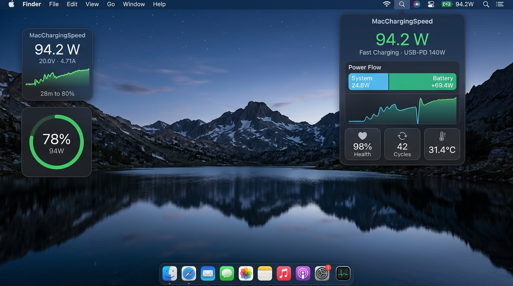
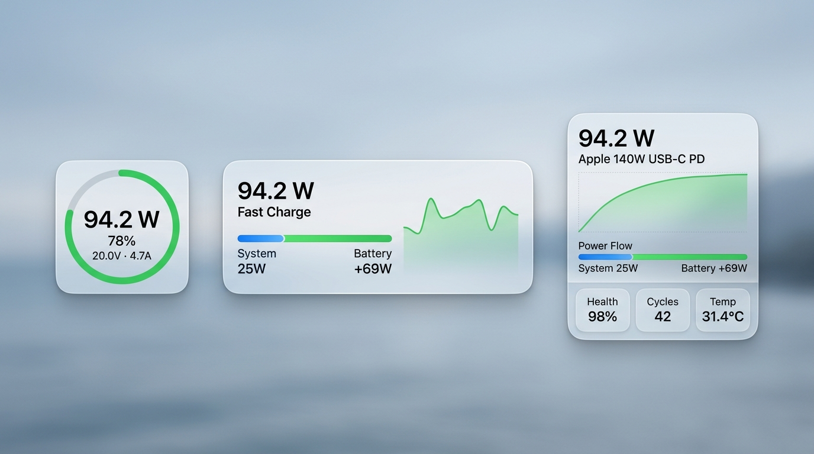
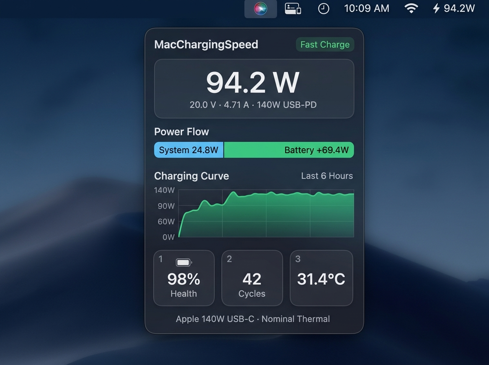

System 24.8W
Battery +69.4W
Power telemetry, distilled to pure glass.
Native macOS Tahoe Liquid Glass desktop widgets and a 1-second live menu bar monitor. Inspect exact charging wattage, voltage, amperage, power flow split, and battery health straight from IOKit.

Interactive Preview
See how your charger actually performs.
Switch between real-world MacBook power scenarios below to preview how the desktop widgets and live menu bar popover adapt in real time.
Desktop Widgets
Three sizes. One cohesive glass language.
Built with native WidgetKit and macOS 26 Tahoe Liquid Glass — with automatic specular vibrancy rendering on macOS 14 Sonoma and macOS 15 Sequoia.

Menu Bar Live Monitor
Every watt, updated every second.
While macOS desktop widgets refresh periodically to preserve battery, the companion menu bar monitor reads AppleSmartBattery directly through IOKit every second — zero shell subprocesses, near-zero CPU wakeups.
-
Zero Subprocesses
Calls
IORegistryEntryCreateCFPropertiesin-process instead of spawningioreg. - Adaptive Formats Switch your menu bar readout between Watts, Watts + %, Watts + Amps, or Icon Only.
- On-Demand Sync Power state changes and manual refreshes immediately push updates to your desktop widgets.

Power-User Telemetry
The hardware truth behind the battery icon.
macOS hides negotiated wattage, cable bottlenecks, and cell health behind simplified labels. MacChargingSpeed surfaces the raw controller telemetry cleanly.
01 / LIVE POWER
Watts, Volts & Amps
Track instantaneous charging watts, USB-PD input voltage and amperage, and signed battery pack current so you can immediately spot a slow cable or throttled port.
02 / POWER FLOW
System vs. Battery Split
Reads Apple Silicon PowerTelemetryData to separate incoming wall watts into live Mac system draw versus net power actually reaching your battery cells.
03 / CHARGING CURVE
Rolling Wattage Sparkline
Visualize fast-charge ramp-up, thermal tapering, and the 80% trickle drop-off in a smooth real-time curve shared between the menu bar popover and widgets.
04 / BATTERY HEALTH
Raw Capacity & Cell Balance
Compares AppleRawMaxCapacity against factory DesignCapacity, tracks cycle count, pack temperature (°C/°F), and individual cell voltage delta (mV).
05 / USB-PD INSPECTOR
Adapter Hardware Details
Inspect connected charger name, manufacturer, USB-PD / EPR protocol, negotiated voltage & current contract, headroom utilization, and adapter serial number.
06 / NATIVE DESIGN
Tahoe Liquid Glass Ready
Uses native SwiftUI .glassEffect and GlassEffectContainer on macOS 26+, with hand-tuned specular vibrancy fallback on macOS 14 and 15.
Get Started
Install on your Mac in one command.
Build natively from source directly into /Applications, or grab the pre-built DMG from GitHub Actions.
Run in macOS Terminal (requires Xcode & Homebrew):
curl -fsSL https://raw.githubusercontent.com/CaptainCompileon/mac-charging-speed-widget/main/scripts/install.sh | bash
1. Build & Launch
Generates the Xcode project via XcodeGen, compiles the app + WidgetKit extension, and opens it in your menu bar.
2. Add Desktop Widgets
Right-click your desktop → Edit Widgets → search MacChargingSpeed and pick Small, Medium, or Large.
3. Customize Telemetry
Open Settings from the menu bar popover to toggle °C/°F, polling speed, menu bar format, and Launch at Login.